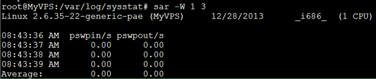

12. sar 找出系统瓶颈的利器¶
sar是System Activity Reporter（系统活动情况报告）的缩写。sar工具将对系统当前的状态进行取样，然后通过计算数据和比例来表达系统的当前运行状态。它的特点是可以连续对系统取样，获得大量的取样数据；取样数据和分析的结果都可以存入文件，所需的负载很小。sar是目前Linux上最为全面的系统性能分析工具之一，可以从14个大方面对系统的活动进行报告，包括文件的读写情况、系统调用的使用情况、串口、CPU效率、内存使用状况、进程活动及IPC有关的活动等，使用也是较为复杂。
sar是查看操作系统报告指标的各种工具中，最为普遍和方便的；它有两种用法；
- 追溯过去的统计数据（默认）
- 周期性的查看当前数据
12.1. 追溯过去的统计数据¶
默认情况下，sar从最近的0点0分开始显示数据；如果想继续查看一天前的报告；可以查看保存在/var/log/sysstat/下的sa日志； 使用sar工具查看:
$sar -f /var/log/sysstat/sa28 \| head sar -r -f
/var/log/sysstat/sa28
{kind=link}
12.2. 查看CPU使用率¶
sar -u : 默认情况下显示的cpu使用率等信息就是sar -u；
{kind=link}
可以看到这台机器使用了虚拟化技术，有相应的时间消耗； 各列的指标分别是:
- %user 用户模式下消耗的CPU时间的比例；
- %nice 通过nice改变了进程调度优先级的进程，在用户模式下消耗的CPU时间的比例
- %system 系统模式下消耗的CPU时间的比例；
- %iowait CPU等待磁盘I/O导致空闲状态消耗的时间比例；
- %steal 利用Xen等操作系统虚拟化技术，等待其它虚拟CPU计算占用的时间比例；
- %idle CPU空闲时间比例；
12.3. 查看平均负载¶
sar -q: 查看平均负载
指定-q后，就能查看运行队列中的进程数、系统上的进程大小、平均负载等；与其它命令相比，它能查看各项指标随时间变化的情况；
- runq-sz：运行队列的长度（等待运行的进程数）
- plist-sz：进程列表中进程（processes）和线程（threads）的数量
- ldavg-1：最后1分钟的系统平均负载 ldavg-5：过去5分钟的系统平均负载
- ldavg-15：过去15分钟的系统平均负载
{kind=link}
12.4. 查看内存使用状况¶
sar -r： 指定-r之后，可查看物理内存使用状况；
{kind=link}
- kbmemfree：这个值和free命令中的free值基本一致,所以它不包括buffer和cache的空间.
- kbmemused：这个值和free命令中的used值基本一致,所以它包括buffer和cache的空间.
- %memused：物理内存使用率，这个值是kbmemused和内存总量(不包括swap)的一个百分比.
- kbbuffers和kbcached：这两个值就是free命令中的buffer和cache.
- kbcommit：保证当前系统所需要的内存,即为了确保不溢出而需要的内存(RAM+swap).
- %commit：这个值是kbcommit与内存总量(包括swap)的一个百分比.
12.5. 查看页面交换发生状况¶
sar -W：查看页面交换发生状况
页面发生交换时，服务器的吞吐量会大幅下降；服务器状况不良时，如果怀疑因为内存不足而导致了页面交换的发生，可以使用这个命令来确认是否发生了大量的交换；
{kind=link}
- pswpin/s：每秒系统换入的交换页面（swap page）数量
- pswpout/s：每秒系统换出的交换页面（swap page）数量
要判断系统瓶颈问题，有时需几个 sar 命令选项结合起来；
- 怀疑CPU存在瓶颈，可用 sar -u 和 sar -q 等来查看
- 怀疑内存存在瓶颈，可用sar -B、sar -r 和 sar -W 等来查看
- 怀疑I/O存在瓶颈，可用 sar -b、sar -u 和 sar -d 等来查看
12.6. 安装¶
- 有的linux系统下，默认可能没有安装这个包，使用apt-get install sysstat 来安装；
- 安装完毕，将性能收集工具的开关打开： vi /etc/default/sysstat
设置 ENABLED=”true”
- 启动这个工具来收集系统性能数据： /etc/init.d/sysstat start
12.7. sar参数说明¶
- -A 汇总所有的报告
- -a 报告文件读写使用情况
- -B 报告附加的缓存的使用情况
- -b 报告缓存的使用情况
- -c 报告系统调用的使用情况
- -d 报告磁盘的使用情况
- -g 报告串口的使用情况
- -h 报告关于buffer使用的统计数据
- -m 报告IPC消息队列和信号量的使用情况
- -n 报告命名cache的使用情况
- -p 报告调页活动的使用情况
- -q 报告运行队列和交换队列的平均长度
- -R 报告进程的活动情况
- -r 报告没有使用的内存页面和硬盘块
- -u 报告CPU的利用率
- -v 报告进程、i节点、文件和锁表状态
- -w 报告系统交换活动状况
- -y 报告TTY设备活动状况